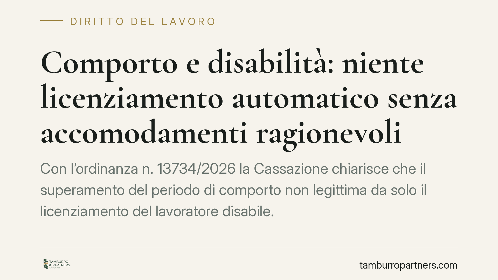

Comporto e disabilità: niente licenziamento automatico senza accomodamenti ragionevoli
Con l'ordinanza n. 13734/2026 la Cassazione chiarisce che il superamento del periodo di comporto non legittima da solo il licenziamento del lavoratore disabile. Prima dell'espulsione il datore deve verificare se sono possibili accomodamenti ragionevoli. Una decisione che ridisegna la gestione delle assenze per malattia quando la patologia è connessa a una condizione di disabilità.

Il caso e il principio
Il comporto è il periodo entro il quale il lavoratore assente per malattia conserva il posto. Superata quella soglia, il contratto collettivo consente in genere il licenziamento. Il meccanismo è tradizionalmente considerato "automatico": raggiunto il tetto di giorni, il rapporto può essere risolto senza ulteriori valutazioni sulle ragioni dell'assenza.
La Corte di Cassazione, Sezione Lavoro (ordinanza n. 13734/2026), interviene proprio su questo automatismo. Quando le assenze derivano da una condizione di disabilità, il datore di lavoro non può limitarsi a conteggiare i giorni e procedere al recesso. Deve prima verificare se esistono misure organizzative in grado di consentire al lavoratore di proseguire l'attività.
Inquadramento normativo
Il riferimento è l'art. 3, comma 3-bis, del D.Lgs. 216/2003, che impone ai datori di lavoro l'adozione di "accomodamenti ragionevoli" per garantire alle persone con disabilità la piena parità di trattamento sul lavoro. La norma attua la direttiva 2000/78/CE, che vieta le discriminazioni fondate, tra l'altro, sulla disabilità in ambito occupazionale.
Il punto giuridico è questo: applicare al lavoratore disabile lo stesso periodo di comporto previsto per tutti gli altri può tradursi in una discriminazione indiretta. Una regola apparentemente neutra produce infatti un effetto svantaggioso per chi, a causa della patologia, ha una probabilità strutturalmente più alta di assentarsi. Per evitare questo esito, la Cassazione impone un passaggio ulteriore: la valutazione degli accomodamenti ragionevoli prima di considerare superato il comporto a fini espulsivi.
Per "accomodamento ragionevole" si intende qualunque adattamento organizzativo o tecnico che non comporti un onere sproporzionato per l'impresa: ad esempio un periodo di comporto più ampio, la rimodulazione delle mansioni, l'adozione di modalità di lavoro flessibili o un diverso conteggio delle assenze collegate alla disabilità.
Implicazioni pratiche
Per il datore di lavoro cambia il metodo. Il superamento numerico della soglia non è più condizione sufficiente per il recesso. Occorre dimostrare di aver attivato un confronto con il lavoratore e di aver esaminato concretamente le alternative all'espulsione.
Un aspetto delicato riguarda la conoscenza della condizione di disabilità. L'obbligo di accomodamento presuppone che il datore sia a conoscenza, o possa ragionevolmente conoscere, lo stato del lavoratore. Diventa quindi centrale la gestione documentale: certificazioni, comunicazioni, eventuali segnalazioni del medico competente.
Sul piano del contenzioso, il licenziamento intimato senza aver valutato gli accomodamenti è esposto a un elevato rischio di nullità per natura discriminatoria, con le conseguenze reintegratorie e risarcitorie che ne derivano. L'onere di provare l'impossibilità o la sproporzione degli accomodamenti grava sul datore di lavoro.
Per il lavoratore disabile, la pronuncia rafforza una tutela sostanziale: le assenze legate alla patologia non possono essere trattate alla stregua di qualsiasi altra malattia, e l'azienda è tenuta a cercare una soluzione prima di procedere.
Cosa fare in concreto
- Mappate le posizioni a rischio: individuate i lavoratori con disabilità riconosciuta o nota e verificate le procedure interne di gestione del comporto.
- Documentate il confronto: prima di qualsiasi recesso per comporto, avviate e verbalizzate un dialogo con il lavoratore sulle possibili misure alternative.
- Valutate gli accomodamenti per iscritto: formalizzate l'analisi delle opzioni organizzative e le ragioni di eventuale impossibilità o sproporzione economica.
- Coinvolgete il medico competente: acquisite una valutazione tecnica sulla compatibilità tra condizione di salute e mansioni, utile anche sul piano probatorio.
- Rivedete i contratti collettivi applicati: verificate se prevedono discipline differenziate del comporto per i lavoratori disabili e integrate le prassi aziendali.
Consigliamo di non gestire il superamento del comporto come un adempimento meramente aritmetico. Ogni posizione va analizzata individualmente, e la tracciabilità delle valutazioni svolte è oggi il presidio più efficace contro il rischio di nullità del licenziamento.
---
*Contributo informativo a cura di Tamburro & Partners - Avv. Giuseppe Tamburro. Non costituisce parere legale.*
Ogni storia di lavoro ha i suoi tempi.
Se gestisci HR e vuoi un confronto su contenzioso, ispezioni o licenziamenti, scrivi allo studio. Ti rispondiamo entro un giorno lavorativo.